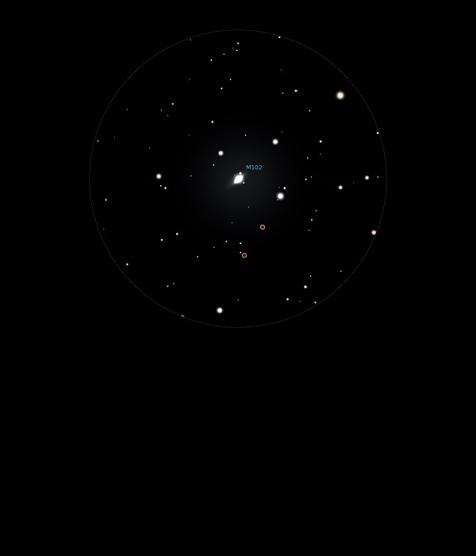

M102

Lenticular Galaxy in Draco
NGC 5866
Mag 10.7
The Spindle Galaxy
26/09/13
A faint elongated smear in 12mm but nicely framed by three stars, HIP 73837 being the brightest at Mag 7.65
There is a faint (Mag 11.25) star within the smear of the galaxy